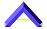
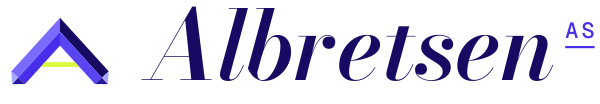
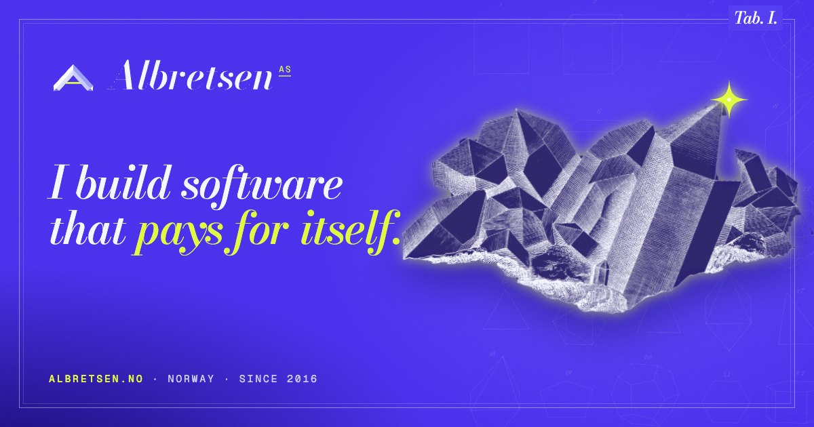

A cabinet of working software.
Violet Cabinet treats the company as a museum archive that has been plugged into the mains. Real public-domain plates (Kurr's Mineral Kingdom, 1859; Haeckel's Kunstformen der Natur; Benjamin West's Franklin) are scanned, cut out and electrified: paper becomes saturated violet, engraved lines become light, and every highlight carries a single spark of yellow.
The site reads as a catalogue: chapters are Tab. I, Tab. II…, figures are numbered, and facts sit on specimen tags. The precision is real (the mark is a Japan-law quartz twin at exactly 84°33′); the play is in how things move: crystals morph, a bust gets scanned, buttons lean toward the cursor.
Scroll-driven chapters · SVG morphing · Lenis · magnetic links
Identity
Tab. A.The mark is two tabular quartz crystals mitred on a vertical twin plane at 84°33′, the real angle of a Japan-law twin. Together they form an A; the crossbar is the current between them, in spark yellow. The wordmark is Bodoni Moda italic (hairlines like crystal edges) with a Geist Mono suffix.






Palette
Tab. B.Seed hue 276° in OKLCH. Violet owns every page; the archive paper appears only as plates and tags; spark is rationed to one thing per view (a glint, a scan line, a hover).
#462eeb · page
#170a62 · glass
#090731 · shadow
#a3a9ff · quiet text
#f3f6ff · type, lines
#ddf93c · one per view
#f8edd8 · plates
Type
Tab. C.Habit & current
italic 500–600, opsz 96I build software that pays for itself. Fun Libs, 113,000+ installs.
400 / 500MCP Emails gives AI agents a real inbox: 17 tools, about 100 email providers, open source under the AGPL. Toolrails puts every tool behind one MCP URL, with tool search and an injection guard.
500, +0.14em, capsfig. 6 · SiO₂ · trigonal — Tab. V · since 2026 · live — No. 052
Centrepiece · SVG morph
Tab. IX.svg/crystal-morph.js scrubbed by scroll. Each chapter is a crystal habit from Kurr's Plate A; the outline is one path resampled to 120 points, facet edges redraw with stroke-dashoffset and hidden edges stay dotted like the engraving. The last chapter resolves into the mark.